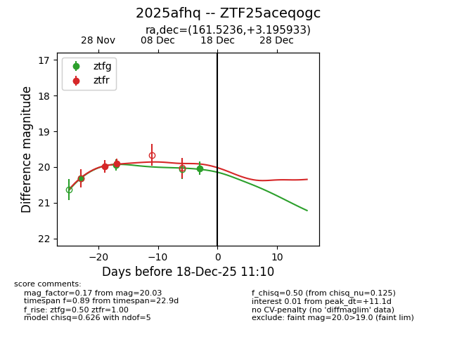
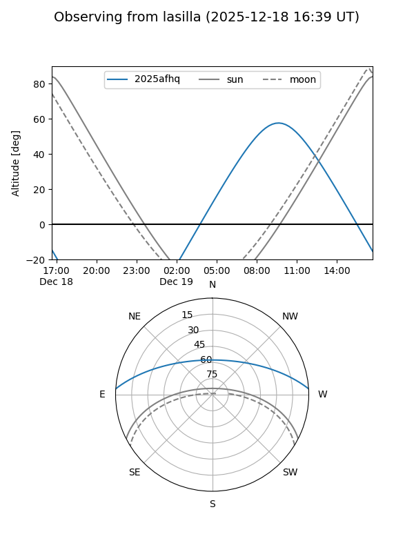
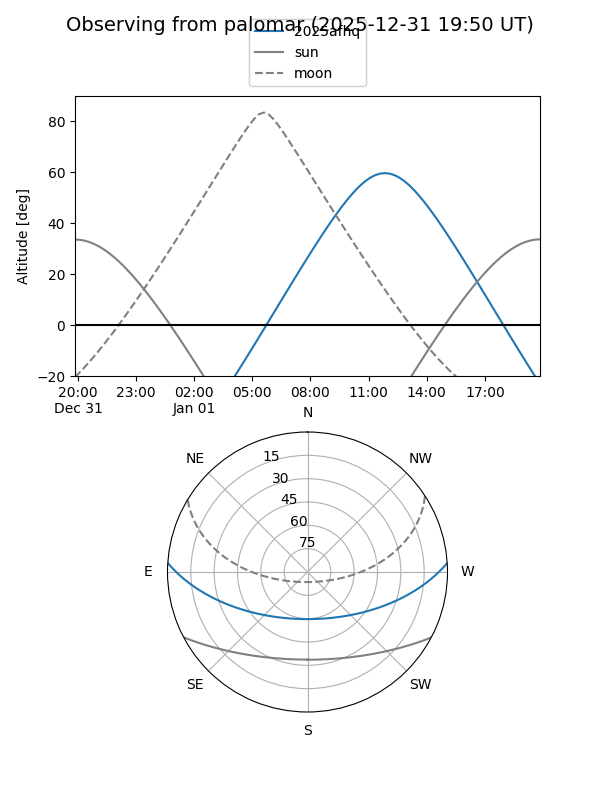
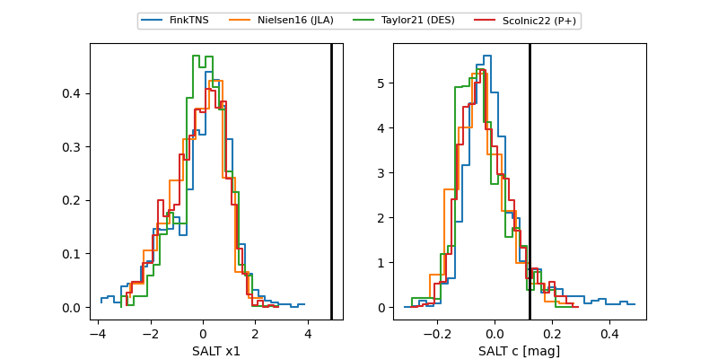

2025afhq
Target 2025afhq at 2025-12-31 16:59
Aliases and brokers:
FINK:
Lasair:
ALeRCE:
TNS:
YSE:
alt names
ZTF25aceqogc (ztf,fink_ztf)
2025afhq (tns,yse)
Coordinates:
equatorial (ra, dec) = 161.5236,+3.19593
equatorial (HMS+DMS) = 10:46:05.66,+03:11:45.36
galactic (l, b) = (246.0904,+51.66589)
Flags:
Photometry:
last ztfg=20.03, ztfr=19.90
3 ztfg, 2 ztfr detections
Lightcurve

Visibility


Additional plots
